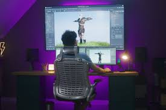

Le développeur de jeux vidéo, aussi appelé concepteur vidéoludique, est un professionnel de la programmation informatique spécialisé dans le milieu de la création vidéoludique. Lors de la conception d'un jeu, c'est lui qui programme les interfaces du jeu, mais également les actions, les outils et les menus
|  |